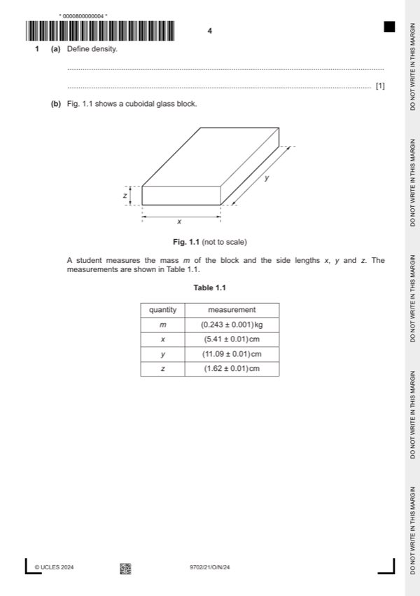

Question 1

Original paper page 4
Part 1(a) — solution
- [B1] Obtain/use: mass per unit volume
Mark points
- [B1] Obtain/use: mass per unit volume
Part 1(b)(i) — solution
- [A1] Obtain/use: = 2500 kg m–3
Mark points
- [A1] Obtain/use: = 2500 kg m–3
Part 1(b)(ii) — solution
- [A1] Obtain/use: percentage uncertainty in = 0.013 100
Mark points
- [A1] Obtain/use: percentage uncertainty in = 0.013 100
Part 1(c) — solution
- [B1] Obtain/use: zero error (on calipers / balance)
Mark points
- [B1] Obtain/use: zero error (on calipers / balance)